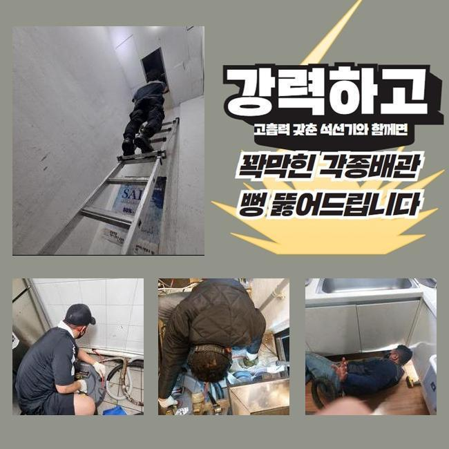
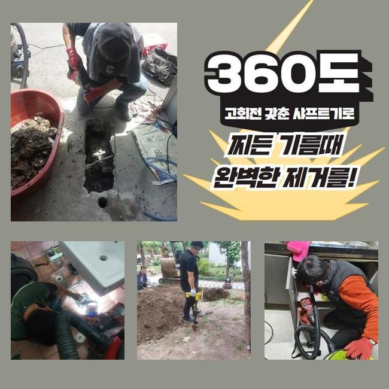
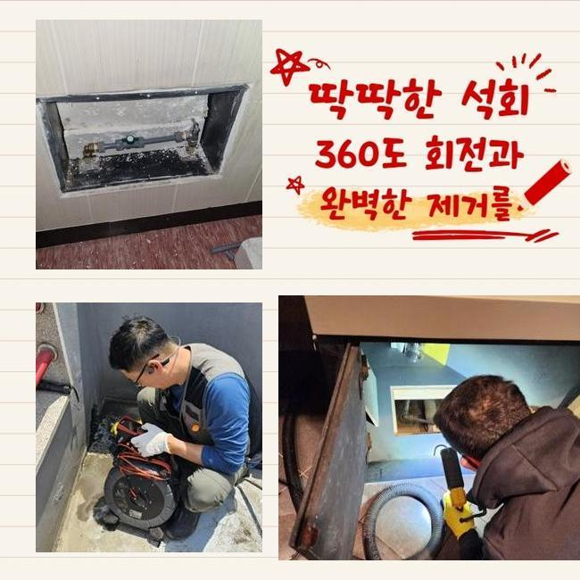
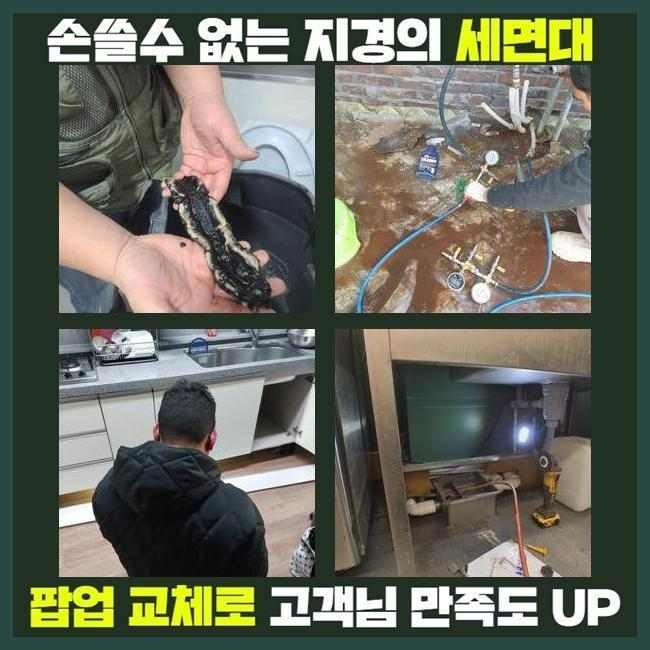
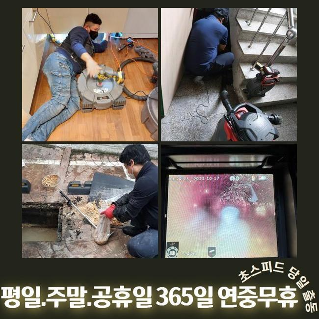
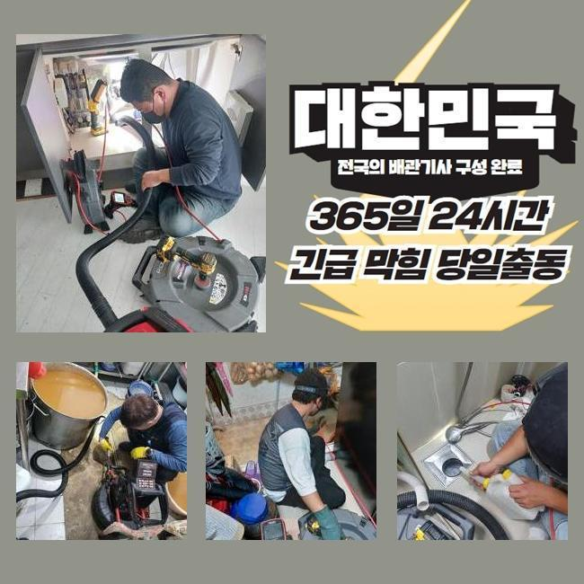
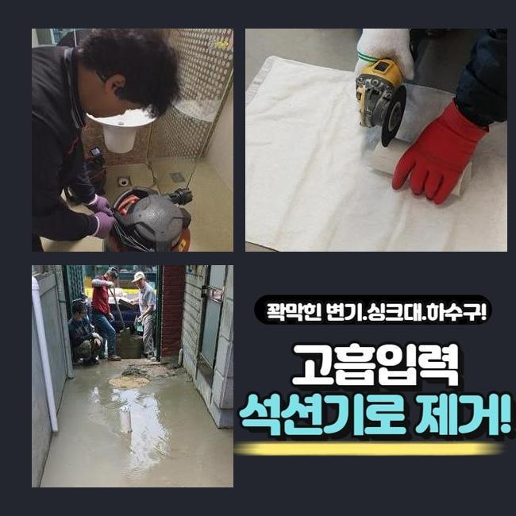

🏠 고양 주방하수구냄새제거 양주 싱크대배수관막힘
고양 싱크대막힘 전문 시공 후기

📋 작업 개요
- 위치: 고양
- 서비스 유형: 싱크대막힘, 하수구막힘, 배관막힘, 집수정막힘, 역류해결, 뚫는업체, 배관청소, 설비공사
- 작업 일시: 2024. 12. 20. 8:56
- 업체명: 하수구수사대 (010-5615-2118)
🔍 문제 상황
고양 주방하수구냄새제거 양주 싱크대배수관막힘
여러 가구가 모여있는 주택의 배수라인을 관리하지 않고 사용하시면 불순물이 쌓이면서 배수구 막힘사고가 일어날 확률이 높아요
이러한 이유로 연식이 오래 되신 경우엔 주기적으로 하수시설의 문제를 확인해봐야 해요
이번에 출동한 현장은 고객분께서 배수라인이 막혔다고 긴급하게 전화를 해주셨어요
긴급하게 출동을 해서 살펴보니 조금 외딴곳의 연립주택으로 근처에는 캠핑장이 들어와있는 상태로 보였습니다
건물을 올리신지 오래되지 않은 새집인데 건물 바깥쪽에서 역류사고가 자주 보인다고 하셨어요
체크해봤더니 창고 안쪽으로 설치되어 있는 집수정에서 밖에 위치해있는 정화조쪽으로 유입되는 형태였습니다
정화조까지 길이가 꽤 돼서 창고쪽에 설치를 할 수 밖에 없었다고 하시더라구요
사례자님께 막혀있는 지점들을 찾는다해도 중간부분에 점검구가 없는 경우라면 장시간 작업을 해야한다고 설명을 드렸고 동의를 해주셨습니다
집수정에서 내시경기를 진입시켰으나 침전물이 가득하게 차있었기 때문에 안쪽으로 라인이 들어가질 않았어요

🔎 원인 분석
💡 전문가 진단: 정밀 진단 장비를 사용하여 슬러지의 고착 여부를 판명하고 타격/세척 작업을 실시했습니다.
이물질이 완전히 막아버린 현재상태를 고객님께도 보여드리고 설명을 드렸습니다
샤프트장비로 시공을 이어나갔어요
기기의 체인쪽에 머리카락 외에도 물티슈등이 어마어마하게 엉켜 나오네요
보통 주택의 역류문제의 이유들은 머리카락이나 물티슈등이 흔하게 나와요
의뢰인님께 이러한 이물질은 거름망을 통해 버리시라고 설명드렸어요
화학재질의 물티슈는 종이재질이 아니라 플라스틱 성질이므로 물에 녹지 않아요
요즘엔 녹는 것도 있지만 다량을 사용하는 경우엔 배수라인이 막히게 되면서 역류상황이 벌어지게 됩니다
배수관 속에 있었던 불순물과 같이 큰덩어리로 변하면서 막힘사고를 유발합니다
사용시 주의하여 물티슈와 작은 쓰레기 등은 분리해서 배출하시기 바랍니다
배수라인은 물만을 따로 처리하는 곳이라는걸 기억하여 불순물은 분리배출을 원칙으로 하시길 바랍니다

🔧 작업 과정
이후엔 창고쪽으로 가서 내시경장비를 투입합니다
배수라인이 길게 매립되어 있어 내시경기로 끝부분까지 진입하는게 불가능해서 쏜드기를 투입했습니다
막힘문제가 있는 지점에 계속 슬러지 제거하는 작업들을 계속했어요
집수정과 동일하게 머리카락 외에도 물티슈가 다량으로 있는걸 직접 보시면서 사례자님께서도 중대한 상황이라는걸 아시고 놀라셨습니다
저희들에게 이와같은 막힘사고가 일어나지 않는 방법을 자세하게 물어보셔서 꼼꼼하게 답변 해드렸습니다
보통 사용하시면서 작은 쓰레기 같은건 흘러갈 것이라고 생각하시겠지만 기울기가 가파른 경우엔 내부에 노폐물도 있어서 머리카락 또는 물티슈등과 기름등을 흘려보내면 위험합니다
내시경기를 투입해서 남은 찌꺼기는 없는지 다시 한번 살펴보았습니다
정화조가 위치한 쪽의 배관과 집수정쪽의 배관까지 전부 체크 하였고 남아있는 침전물 없이 아주 깔끔한 배관이 보였어요
사례자님께도 보여드렸더니 다행이라고 하셨습니다
일반적으로 염산등을 부으면 쉽게 막힌부분을 뚫어낸다고 알고있는 분들도 있지만서도 그런 방법은 옳지 않아요
사례자님께서 이용하실때 이물질들을 따로 배출하며 집의 사용기간이 오래 된 경우라면 사전에 업체를 통해서 예방하는 차원에서 검진을 진행하셔야 해요
크게 신경을 쓰지않고 사용하시다가 역류상황이 일어나서 대규모 공사까지 번지게 되면서 비용적인 부담이 커지게 됩니다
앞서 말씀드린 것처럼 배수구도 미룰수록 비용적인 면에서 고객분께서 책임져야 하는 부분이 커지는 것을 잊지말고 미리 예방하셔야 해요
작업이 끝난 후에 주변의 오염을 정리하고 바닥청소까지 완료했습니다
오래된 이물질들로 악취가 진동하여 특수한 세제를 도포하고 호스를 연결한 후에 전체적으로 청소했습니다
원래 이러한 현장에서 이러한 오염물질까지 저희 전문진이 대청소하는 경우는 많지 않아요


✅ 작업 완료
이번같은 현장은 오염이 매우 심한편이라서 마무리 지을 수가 없었습니다
저희 전문진은 하수관의 물티슈는 물론 배수관 속의 불순물을 꺼내고 하수의 흐름 방향이 제대로 되는 것인지 마무리 점검을 반드시 합니다
의뢰인께서 저희 전문 기술진을 믿고 맡겨주시기를 바라오며 비슷한 문제로 자세한 사항을 상담 받고 싶으시면 언제든지 연락주세요
배수관 문제를 비용적인 부분을 최소화한 방법으로 처리하시려면 신속함이 최선임을 기억해주시길 바랍니다
일상 생활 속에서 이와같은 문제가 일어나지 않으면 좋겠으나 문제가 의심된다면 신속하게 전문 기술진에게 의뢰를 하시기 바랍니다




⚠️ 주방 싱크대 배관 막힘 예방 수칙
- ✅ 기름기가 묻은 식기나 프라이팬은 설거지 전 키친타올로 반드시 기름때를 닦아내세요.
- ✅ 주기적으로 싱크대 개수대에 뜨거운 물을 가득 받아 한 번에 내려 배관 내부 기름을 씻어내세요.
- ✅ 배수구 거름망을 미세한 필터로 사용하시고 음식물 찌꺼기가 틈으로 새어 들지 않게 관리하세요.
- ✅ 베이킹소다와 식초를 뜨거운 물과 함께 일주일에 한 번씩 부어주면 배관 살균과 막힘 예방에 좋습니다.
💡 핵심 정리
- 확실한 장비 작업(내시경 점검 및 샤프트 스케일링)으로 원인을 뿌리 뽑습니다.
- 작업 후 1년 이내에 동일한 부위 재발 시 100% 무상 A/S 서비스를 보장합니다.
- 서울 · 경기 · 인천 전 지역에 24시간 언제든 긴급 출동할 수 있도록 항시 대기 중입니다.
❓ 자주 묻는 질문 (FAQ)
🚨 고양 싱크대막힘 문제로 고민이신가요?
정확한 원인 진단과 확실한 시공으로 재발 없는 해결을 약속드립니다.
24시간 긴급 출동 | 서울 · 경기 · 인천 전지역 | 1년 내 재발 시 무상 A/S